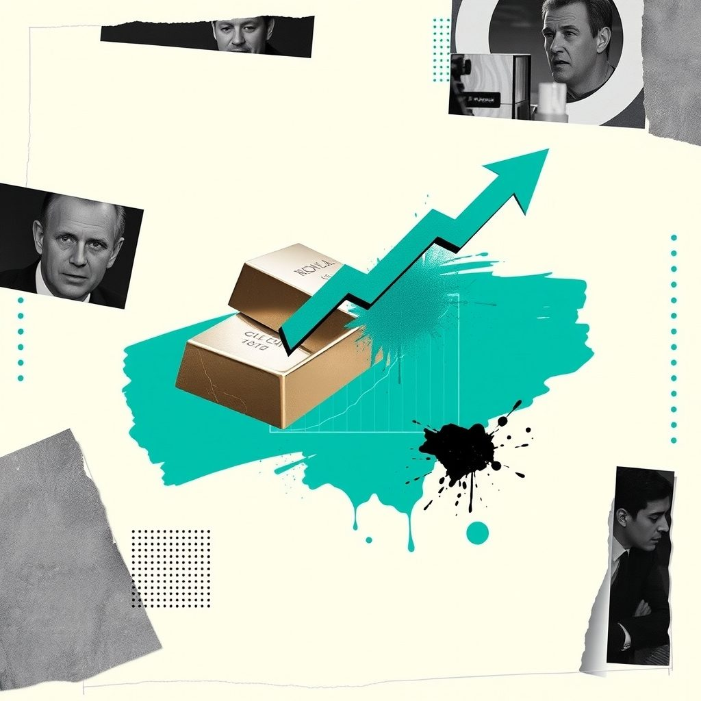
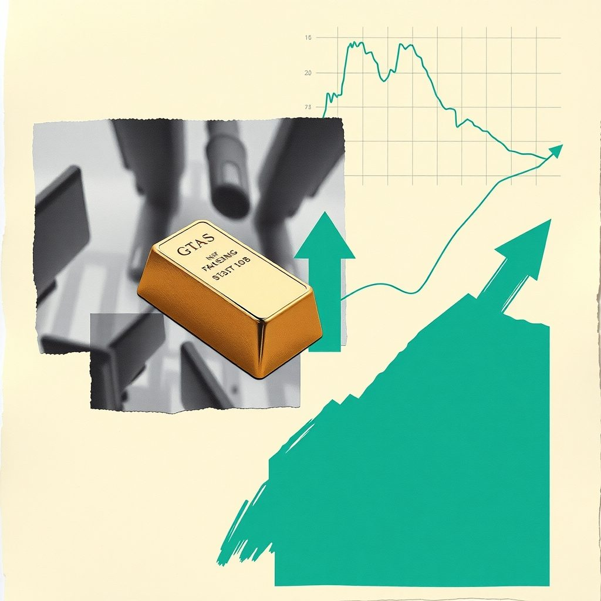
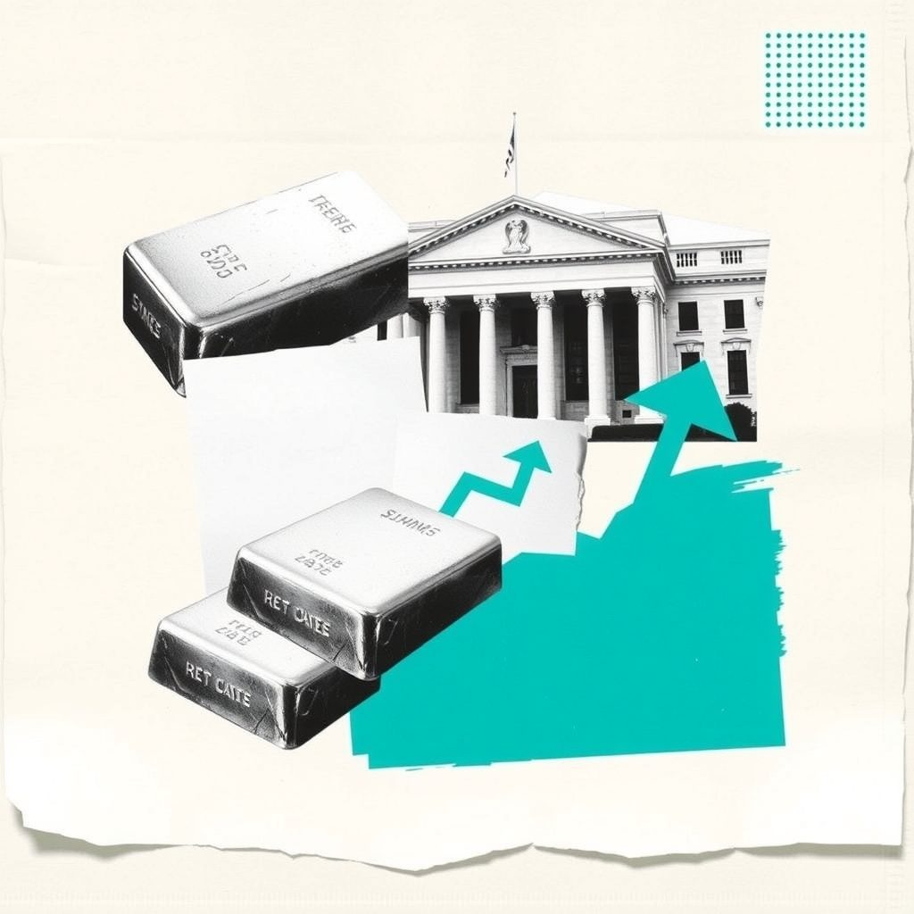
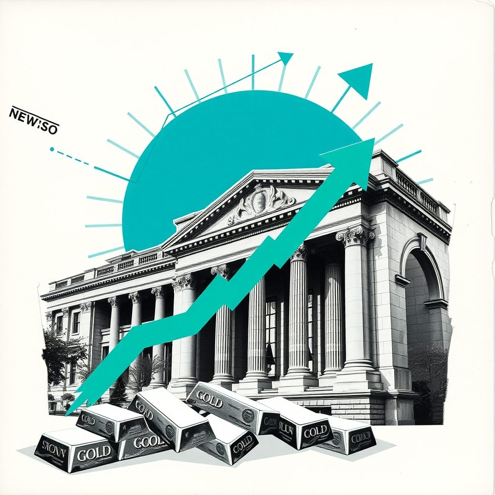
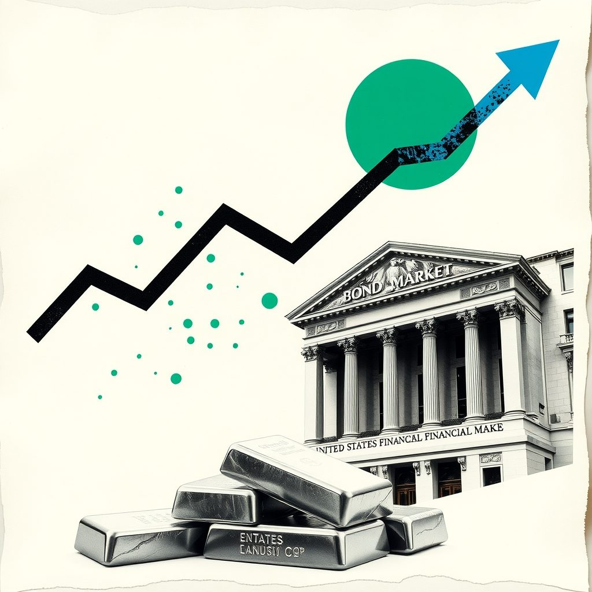
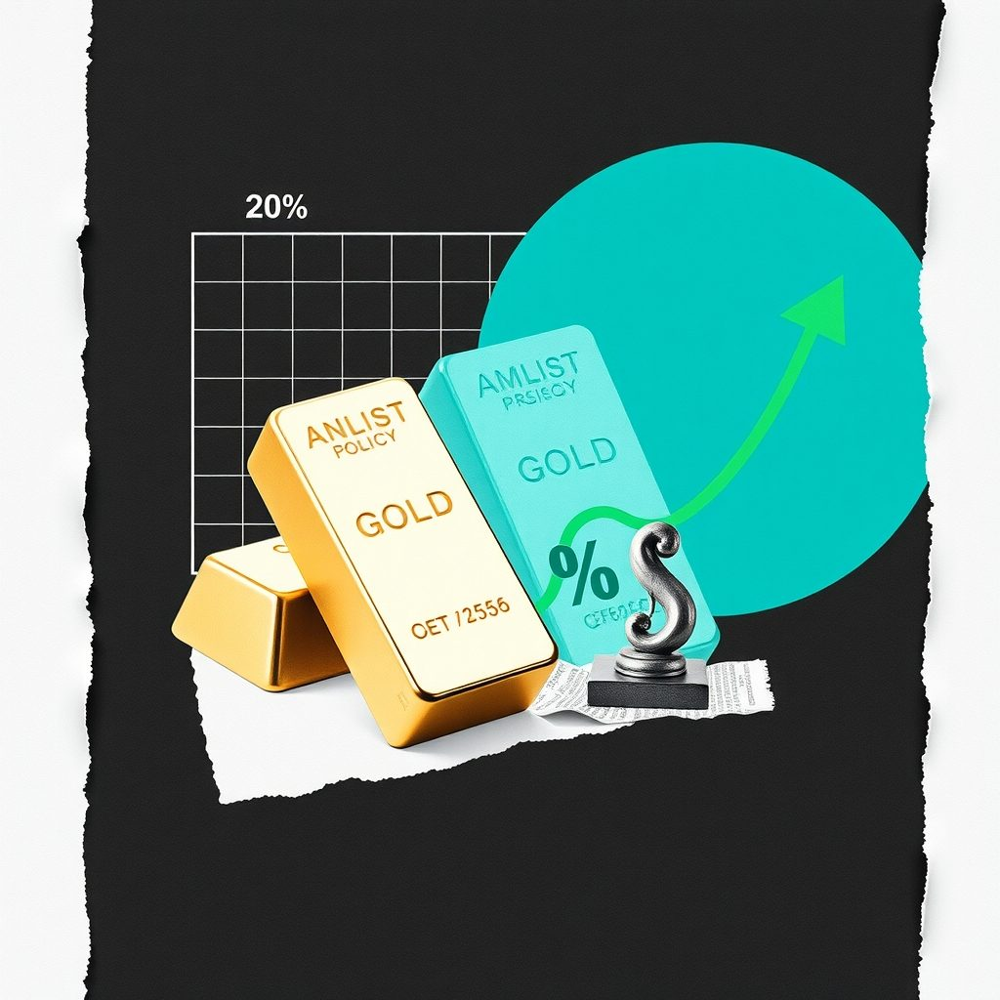
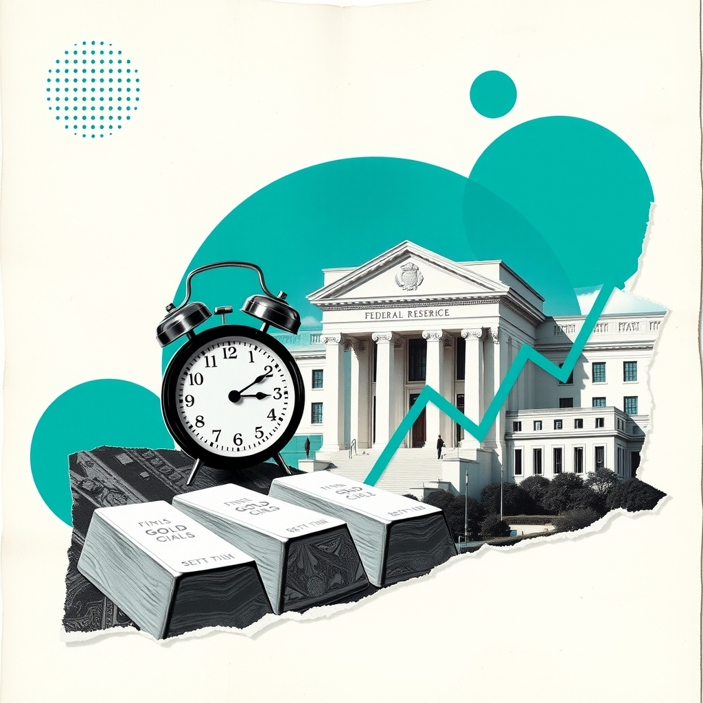

Gold & Global Economic Newsព័ត៌មានមាស និងសេដ្ឋកិច្ចពិភពលោក
Daily news that moves gold (XAU/USD), explained simply in English and Khmer.
ព័ត៌មានប្រចាំថ្ងៃដែលជះឥទ្ធិពលដល់តម្លៃមាស (XAU/USD) ពន្យល់ងាយៗជាភាសាអង់គ្លេស និងខ្មែរ។

Jim Cramer Sees Major Gold Move After Brutal PlungeJim Cramer មើលឃើញការផ្លាស់ប្តូរំជើបរំជួលរបស់មាសក្រោយការធ្លាក់ចុះយ៉ាងខ្លាំង
Jim Cramer noted that the setup behind gold's next move is starting to change following a severe $1,500 decline. This commentary highlights shifting market dynamics that could heavily impact XAU/USD trading.
Jim Cramer បានកត់សម្គាល់ថាទម្រង់ទីផ្សាររបស់មាសចាប់ផ្តើមផ្លាស់ប្តូរ បន្ទាប់ពីការធ្លាក់ចុះយ៉ាងគំហុកចំនួន 1,500 ដុល្លារ។ ការវិភាគនេះបង្ហាញពីការប្រែប្រួលសន្ទុះទីផ្សារដែលអាចជះឥទ្ធិពលយ៉ាងខ្លាំងដល់ការជួញដូរ XAU/USD។
Advisors Flag Structural Market Risks as Stocks Hit Recordsអ្នកជំនាញព្រមានពីហានិភ័យទីផ្សារ ខណៈភាគហ៊ុនឡើងដល់កម្រិតខ្ពស់បំផុត
As major stock indexes touch record highs, analysts highlight hidden structural risks that could prompt a future market pullback. This shifting sentiment brings renewed focus to portfolio protection strategies using gold, bonds, and real assets.
ខណៈទីផ្សារភាគហ៊ុនឡើងដល់កម្រិតខ្ពស់ថ្មី អ្នកវិភាគបានលើកឡើងពីហានិភ័យដែលលាក់កំបាំងដែលអាចនាំឱ្យមានការធ្លាក់ចុះនាពេលអនាគត។ ការផ្លាស់ប្តូរអារម្មណ៍ទីផ្សារនេះបាននាំឱ្យមានការយកចិត្តទុកដាក់សាថ្មីលើការការពារផលប័ត្រដោយប្រើមាសនិងទ្រព្យសកម្មពិតប្រាកដ។
Black Sea Drone Attack Sinks Ship Amid Rising Regional Tensionsការវាយប្រហារដោយដ្រូនលើសមុទ្រខ្មៅបង្កើនភាពតានតឹងភូមិសាស្ត្រនយោបាយ
A ship has sunk and its crew is missing following a drone attack in the Black Sea as Russia intensifies strikes in the region. This geopolitical escalation boosts safe-haven demand for gold.
នាវាមួយបានលិច និងបាត់បង់នាវិកក្រោយការវាយប្រហារដោយដ្រូន ខណៈរុស្ស៊ីបង្កើនការវាយប្រហារក្នុងសមុទ្រខ្មៅ។ ភាពតានតឹងនេះជួយជំរុញតម្រូវការទីសុវត្ថិភាពសម្រាប់មាស។
S&P 500 Hits New Highs as Falling Oil Prices Ease InflationS&P 500 ឡើងដល់កម្រិតខ្ពស់ថ្មី ខណៈតម្លៃប្រេងធ្លាក់ចុះជួយសម្រាលអតិផរណា
The S&P 500 reached a new high as declining oil prices helped ease broader inflation concerns. For gold, shifting energy costs and equity market strength influence safe-haven and inflation hedging flows.
សន្ទស្សន៍ S&P 500 បានឡើងដល់កម្រិតខ្ពស់ថ្មី ខណៈតម្លៃប្រេងដែលធ្លាក់ចុះបានជួយកាត់បន្ថយការព្រួយបារម្ភអំពីអតិផរណា។ សម្រាប់មាស ការប្រែប្រួលថ្លៃថាមពលនិងទីផ្សារភាគហ៊ុនប៉ះពាល់ដល់លំហូរទុនសុវត្ថិភាពនិងការការពារអតិផរណា។
US Trade Deficit Widens to $105.6 Billionឱនភាពពាណិជ្ជកម្មអាមេរិកកើនឡើងដល់ ១០៥.៦ ពាន់លានដុល្លារ
The US trade deficit expanded significantly to $105.6 billion, exceeding consensus estimates and marking a 13.7% jump from July. This sharp shift in international trade flows holds implications for the US dollar and broader macroeconomic sentiment relevant to gold.
ឱនភាពពាណិជ្ជកម្មរបស់សហរដ្ឋអាមេរិកបានពង្រីកខ្លួនដល់ ១០៥.៦ ពាន់លានដុល្លារ ដោយបានកើនឡើង ១៣.៧% ពីខែកក្កដា។ ការផ្លាស់ប្តូរនេះមានសារៈសំខាន់សម្រាប់ទីផ្សារមាសតាមរយៈឥទ្ធិពលលើតម្លៃប្រាក់ដុល្លារអាមេរិក។
Energy Shock and Yield Surge Weigh on Mining Stocksការធ្លាក់ចុះតម្លៃភាគហ៊ុននិងប្រាក់ចំណូលសញ្ញាប័ណ្ណប៉ះពាល់ដល់ទីផ្សារមាស
The world's 50 biggest miners lost $264 billion in September as a Fed rate hike and surging bond yields dragged gold lower. Higher yields and rate pressures typically pressure non-yielding bullion.
ក្រុមហ៊ុនរ៉ែធំជាងគេចំនួន 50 នៅលើពិភពលោកបានខាតបង់ទឹកប្រាក់ចំនួន 264 ប៊ីលានដុល្លារអាមេរិកក្នុងខែកញ្ញា ដោយសារការដំឡើងអត្រាការប្រាក់របស់ Fed និងការកើនឡើងនៃប្រាក់ចំណូលសញ្ញាប័ណ្ណ។ កត្តាទាំងនេះបង្កើតសម្ពាធយ៉ាងខ្លាំងដល់ទីផ្សារមាស។
Inflation Concerns and Government Policy Shape Market Sentimentការព្រួយបារម្ភเรื่องអតិផរណា এবং គោលនយោបាយរដ្ឋាភិបាល កំណត់ទិសដៅទីផ្សារ
PM Capital released its Q2 2026 investor letter, highlighting that persistent inflation and central bank challenges are shaping market sentiment. This macro backdrop impacts gold as investors reassess policy paths and inflation hedging.
ក្រុមហ៊ុន PM Capital បានបញ្ចេញលិខិតវិនិយោគិនត្រីមាសទី២ ឆ្នាំ២០២៦ ដោយបញ្ជាក់ថាអតិផរណាជាប់រហូតកំពុងកំណត់ទិសដៅទីផ្សារ។ ស្ថានភាពម៉ាក្រូសេដ្ឋកិច្ចនេះមានឥទ្ធិពលលើ មាស ពេលអ្នកជួញដូរវាយតម្លៃឡើងវិញនូវគោលនយោបាយធនាគារកណ្តាល។

Gold Edges Higher as Global Conditions and Inflation Weighមាសកើនឡើងបន្តិច ខណៈអ្នកវិនិយោគតាមដានស្ថានភាពសកលនិងអតិផរណា
Gold futures opened higher at $4,169.20 per troy ounce, rising further in early trading as investors monitored domestic and global conditions. This movement highlights how macro sentiment and inflation concerns continue to influence XAU/USD valuations.
តម្លៃអនាគតមាសបានបើកឡើងក្នុងតម្លៃ 4,169.20 ដុល្លារអាមេរិកក្នុងមួយអោន ហើយបានបន្តឡើងថ្លៃបន្ថែមទៀត ខណៈអ្នកវិនិយោគតាមដានស្ថានភាពក្នុងស្រុកនិងសកល។ ការណ៍នេះបង្ហាញពីរបៀបដែលអារម្មណ៍ទីផ្សារនិងបញ្ហាអតិផរណាបន្តប៉ះពាល់ដល់តម្លៃ XAU/USD។

Gold Steadies as Strong Dollar and Yields Weighមាសរក្សាទម្រង់ស្ងប់ស្ងាត់ ខណៈដុល្លារនិងអត្រាការប្រាក់រតនាគារឡើងថ្លៃ
Gold held steady as traders weighed the impact of a stronger dollar and higher Treasury yields on Federal Reserve policy. These currency and yield pressures create a mixed market environment for precious metals.
តម្លៃមាសបានរក្សាលំនឹង ខណៈអ្នកជួញដូរថ្លឹងថ្លែងពីផលប៉ះពាល់នៃប្រាក់ដុល្លារអាមេរិកខ្លាំង និងអត្រាការប្រាក់រតនាគារខ្ពស់ទៅលើគោលនយោបាយរបស់ Fed។ កត្តាទាំងនេះបង្កើតបានជាបរិយាកាសទីផ្សារចម្រុះសម្រាប់លោហៈមានតម្លៃ។
Gold Holds Near USD 4,140 as Dollar and Yields Offset Fed Rate Outlookមាសរក្សាទីតាំងប្រហែល 4140 ដុល្លារអាមេរិក ខណៈប្រាក់ដុល្លារ និងអត្រាការប្រាក់ទប់ទល់នឹងការរំពឹងទុកលើអត្រាការប្រាក់របស់ Fed
Gold prices held steady near USD 4,140 following a recovery from recent weekly declines. A stronger US dollar and elevated Treasury yields offset support from lower Federal Reserve rate hike expectations.
តម្លៃមាសបានស្ថិតូនៅកម្រិតស្ថិរភាពជុំវិញ 4140 ដុល្លារអាមេរិក បន្ទាប់ពីការងើបឡើងវិញពីការធ្លាក់ចុះប្រចាំសប្តាហ៍។ ការងើបឡើងនៃតម្លៃប្រាក់ដុល្លារអាមេរិក និងផលប័ណ្ណបំណុលបានទូទាត់ទម្ងន់ជាមួយនឹងការរំពឹងទុកថារួមបន្ថយការដំឡើងអត្រាការប្រាក់របស់ធនាគារកណ្តាល។

SEC Clears Leveraged Crypto and Precious Metals Exchange FundsSEC អනුម័តមូលនិធិ leveraged សម្រាប់គ្រីបតូ និងលោហៈមានតម្លៃ
The agency approved a Cboe rule for funds tracking daily moves of Bitcoin, Ethereum, gold, silver, oil, and natural gas. New regulated derivative products could shift institutional sentiment and trading volumes across physical and paper gold markets.
ទីភ្នាក់ងារនេះបានអនុម័តច្បាប់ Cboe សម្រាប់មូលនិធិដែលតាមដានការផ្លាស់ប្តូរតម្លៃប្រចាំថ្ងៃរបស់ Bitcoin, Ethereum, មាស និងប្រាក់។ ផលិតផលនិស្សន្ទវត្ថុថ្មីទាំងនេះអាចផ្លាស់ប្តូរអារម្មណ៍វិនិយោគិន និងបរិមាណជួញដូរលើទីផ្សារមាស។

Tech Stocks Repriced as Yields and Rate Pressures Mountភាគហ៊ុនបច្ចេកវិទ្យាធ្លាក់ក្រោមសម្ពាធ ខណៈអត្រាผลចំណេញមូលបត្របំណុលនិងអត្រាការប្រាក់កើនឡើង
A weak jobs report, lofty Treasury yields near 5.3%, and volatile commodity prices have put rate-sensitive growth stocks under the microscope. This macro environment heavily influences rate expectations, driving shifts in capital between bonds and precious metals.
របាយការណ៍ការងារទន់ខ្សោយ អត្រាผลចំណេញមូលបត្របំណុលជិត 5.3% និងតម្លៃទំនិញមានការប្រែប្រួល បានដាក់សម្ពាធលើភាគហ៊ុនប្ចេកវិទ្យា។ បរិយាកាសម៉ាក្រូសេដ្ឋកិច្ចនេះជំរុញឱ្យមានការផ្លាស់ប្តូរទុនរវាងមូលបត្របំណុលនិងមាស។

Nasdaq Hits Highs as Wall Street Splits and Yields CreepNasdaq ឡើងថ្លៃខ្ពស់ ខណៈទីផ្សារភាគហ៊ុនអាមេរិកបែងចែកនិន្នាការនិងអត្រាផលចំណូលកើនឡើង
Wall Street closed the week divided as the Nasdaq reached new highs while the Dow slipped and Treasury yields ticked upward. Precious metals including gold advanced alongside this broader market action.
ទីផ្សារភាគហ៊ុន Wall Street បិទបញ្ចប់សប្តាហ៍ដោយមានភាពខុសគ្នា ដោយ Nasdaq ឡើងដល់កម្រិតខ្ពស់ថ្មី ខណៈ Dow ធ្លាក់ចុះ។ មាសបានកើនឡើងទន្ទឹមនឹងការប្រែប្រួលនៃទីផ្សារទូទៅនេះ។

Spot Gold Rises as October Fed Rate Hike Odds Waneតម្លៃមាស Spot កើនឡើង ខណៈឱកាសដំឡើងការប្រាក់របស់ Fed ក្នុងខែតុលាធ្លាក់ចុះ
Spot gold climbed 0.6% to $4,165.49 after a soft September jobs report lowered tightening expectations. Reduced chances of a Fed rate hike lessen yield competition against non-yielding bullion.
តម្លៃមាស Spot បានកើនឡើង 0.6% ដល់ 4,165.49 ដុល្លារ បន្ទាប់ពីរបាយការណ៍ការងារខែកញ្ញាខ្សោយបានកាត់បន្ថយការរំពឹងទុកលើការរឹតបន្តឹង។ ការធ្លាក់ចុះនៃឱកាសដំឡើងអត្រាការប្រាក់របស់ Fed ជួយកាត់បន្ថយសម្ពាធលើលោហៈធាតុដែលមិនផ្តល់ផលប័ត្រ។
Wall Street Strategists Turn to Cross-Asset Hedges Amid Yield Surgeយុទ្ធសាស្ត្រទីផ្សារ Wall Street ងាករកដំណោះស្រាយការពារហានិភ័យចំពេលអត្រាការប្រាក់ប័ណ្ណបំណុលហក់ឡើង
Wall Street strategists are focusing on cross-asset trades as equities, gold and oil struggle while Treasury yields surge. This shift highlights how soaring yields and struggling asset classes create new pressures for precious metals.
អ្នកយុទ្ធសាស្ត្រ Wall Street កំពុងផ្តោតលើការជួញដូរឆ្លងទ្រព្យសកម្ម ខណៈភាគហ៊ុន មាស និងប្រេងជួបការលំបាក ενពេលដែលទិន្នផលប័ណ្ណបំណុលហក់ឡើង។ ការផ្លាស់ប្តូរនេះបង្ហាញពីសម្ពាធថ្មីសម្រាប់លោហៈមានតម្លៃ។
Gold Edges Higher as Markets Weigh Labor Data and Yieldsមាសកើនឡើងបន្តិច ខណៈទីផ្សារថ្លឹងថ្លែងទិន្នន័យការងារនិងអត្រាผลចំណេញសញ្ញាប័ណ្ណ
Gold rose following its largest weekly drop since June as market participants evaluated US labor trends and bond yields. This ongoing assessment of economic data directly influences interest rate expectations and metal valuations.
តម្លៃមាសបានងើបឡើងវិញបន្ទាប់ពីការធ្លាក់ចុះប្រចាំសប្តាហ៍ដ៏ធំបំផុតចាប់តាំងពីខែមិថុនាមក ខណៈអ្នកជួញដូរវាយតម្លៃលើស្ថានភាពទីផ្សារការងារ។ ការវិភាគលើទិន្នន័យសេដ្ឋកិច្ចទាំងនេះមានឥទ្ធិពលផ្ទាល់ទៅលើការរំពឹងទុកអត្រាការប្រាក់ និងតម្លៃលោហៈមានតម្លៃ។
Gold Edges Higher as Labor Slowdown Offsets Elevated Yieldsមាសឡើងថ្លៃបន្តិច ខណៈទីផ្សារការងារថយចុះទប់ទល់នឹងទិន្នផលសញ្ញាបណ្ណខ្ពស់
Gold edged higher on Monday following its sharpest weekly decline since June. Slower U.S. labor momentum eased Federal Reserve rate hike bets, but elevated Treasury yields and oil prices limited gains.
តម្លៃមាសបានកើនឡើងបន្តិចកាលពីថ្ងៃចន្ទ បន្ទាប់ពីការធ្លាក់ចុះប្រចាំសប្តាហ៍ខ្លាំងបំផុតចាប់តាំងពីខែមិថុនា។ ការថយចុះកម្តៅនៃទីផ្សារការងារសហរដ្ឋអាមេរិកបានកាត់បន្ថយការរំពឹងទុកលើការដំឡើងអត្រាការប្រាក់ Fed ប៉ុន្តែទិន្នផលសញ្ញាបណ្ណខ្ពស់បានដាក់សម្ពាធលើការងើបឡើងនេះ។

Key US Data and Fed Minutes Ahead for Gold Tradersទិន្នន័យសេដ្ឋកិច្ចអាមេរិក និងកំណត់ហេតុ FOMC សម្រាប់អ្នកជួញដូរមាស
Upcoming US economic releases may drive fresh swings in gold (XAU/USD). Traders should monitor the ISM Services PMI and FOMC Meeting Minutes closely.
ព្រឹត្តិការណ៍សេដ្ឋកិច្ចអាមេរិកសំខាន់ៗអាចជំរុញឱ្យតម្លៃមាស (XAU/USD) ប្រែប្រួលខ្លាំង។ អ្នកជួញដូរគួរតាមដានរបាយការណ៍ ISM Services PMI និងកំណត់ហេតុ FOMC ឱ្យបានដិតដល់។

Gold Futures Erase Jobs Gains, Sinking Lower Intradayកិច្ចសន្យាអនាគតមាសបាត់បង់ការកើនឡើងពីទិន្នន័យការងារ ដោយធ្លាក់ចុះវិញក្នុងថ្ងៃ
Gold futures surrendered their early jobs-data rally, turning lower midway through the session. This intraday reversal shows traders fading soft-data gains, directly impacting near-term sentiment for XAU/USD.
កិច្ចសន្យាអនាគតមាសបានបាត់បង់ការកើនឡើងដំបូងដែលទទួលបានពីទិន្នន័យការងារ ដោយបានធ្លាក់ចុះវិញនៅពាក់កណ្តាលថ្ងៃ។ ការបញ្ច្រាសទិសដៅក្នុងថ្ងៃនេះបង្ហាញពីការលក់ទប់ទល់នឹងការឡើងថ្លៃ ដែលជះឥទ្ធិពលផ្ទាល់ដល់មនោសញ្ចេតនាលើ XAU/USD។

Gold Jumps as Soft Jobs Report Cools Fed Rate Betsមាសស្ទុះឡើងក្រោយទិន្នន័យការងារខ្សោយកាត់បន្ថយការរំពឹងទុកអត្រាការប្រាក់ Fed
The US added just 29,000 jobs in September, pushing gold higher as traders lowered expectations for a Fed rate hike. This weak labor data directly impacts rate expectations and currency valuations, shifting market momentum.
សហរដ្ឋអាមេរិកបានបន្ថែមការងារត្រឹមតែ ២៩,០០០ ប៉ុណ្ណោះក្នុងខែកញ្ញា ដោយបានជំរុញឱ្យតម្លៃមាសកើនឡើង ខណៈអ្នកជួញដោកាត់បន្ថយការព្យាករណ៍លើការដំឡើងអត្រាការប្រាក់របស់ Fed។ ទិន្នន័យទីផ្សារការងារខ្សោយនេះប៉ះពាល់ផ្ទាល់ដល់ការរំពឹងទុកអត្រាការប្រាក់ និងតម្លៃប្រាក់ដុល្លារ។

US Labor Market Falters as September Payrolls Miss Forecastទីផ្សារការងារអាรัฐធ្លាក់ចុះខណៈទិន្នន័យការងារខែកញ្ញាមិនដល់ការរំពឹងទុក
Nonfarm payrolls grew by just 29,000 in September and the unemployment rate rose to 4.2%, according to the Bureau of Labor Statistics. The weaker labor data significantly reduced expectations of further Fed rate hikes.
ទិន្នន័យការងារក្រៅវិស័យកសិកម្មបានកើនឡើងត្រឹមតែ ២៩,០០០ កន្លែងក្នុងខែកញ្ញា ហើយអត្រាអ្នកគ្មានការងារធ្វើបានកើនឡើងដល់ ៤,២%។ ទិន្នន័យខ្សោយនេះបានកាត់បន្ថយការរំពឹងទុកលើការដំឡើងអត្រាការប្រាក់របស់ Fed យ៉ាងខ្លាំង។

Gold Steadifies as Markets Await U.S. Jobs Dataមាសមានភាពនឹងនរ ខណៈទីផ្សាររង់ចាំទិន្នន័យការងារអាមេរិក
Gold prices remained little changed while investors awaited crucial U.S. labor market reports. A stronger dollar and high yields weighed on non-yielding bullion.
តម្លៃមាសមានការផ្លាស់ប្តូរតិចតួចប៉ុណ្ណោះ ខណៈអ្នកវិនិយោគរង់ចាំរបាយការណ៍ទីផ្សារការងារអាមេរិកដ៏សំខាន់។ ការងើបឡើងនៃដុល្លារអាមេរិក និងអត្រាការប្រាក់រតនាគារខ្ពស់បានដាក់សម្ពាធដល់លោហៈមានតម្លៃនេះ។

Peak Rate Prospects Shift Focus Across Precious Metalsអត្រាការប្រាក់អាចឈានដល់កម្រិតកំពូល ខណៈតម្រូវការលោហៈប្រែប្រួល
Market expectations suggest interest rates may be nearing a peak while silver gains attention. Sustained economic resilience could reshape demand dynamics between gold and industrial metals.
ការពិភាក្សាលើទីផ្សារបង្ហាញថាអត្រាការប្រាក់អាចនឹងឈានដល់កម្រិតកំពូល ខណៈ silver កំពុងទាក់ទាញចំណាប់អារម្មណ៍។ ការណ៍នេះមានសារៈសំខាន់ចំពោះមាស ព្រោះកំណើនសេដ្ឋកិច្ចបន្តអាចបង្វែរលំហូរទុនរវាងទ្រព្យសម្បត្តិសុវត្ថិភាព និងលោហៈឧស្សាហកម្ម។

Bond Yields Retreat as Buyers Return to Treasury Marketអត្រាការប្រាក់សញ្ញាប័ណ្ណធ្លាក់ចុះ ខណៈអ្នកទិញត្រឡប់ចូលទីផ្សារ Treasury វិញ
US bond yields suddenly retreated from recent highs as buyers stepped back into the Treasury market. This dynamic influences real yields and rate expectations, directly impacting the valuation of XAU/USD.
អត្រាការប្រាក់សញ្ញាប័ណ្ណអាមេរិកបានធ្លាក់ចុះយ៉ាងលឿនពីកម្រិតខ្ពស់ថ្មីៗនេះ ខណៈដែលអ្នកទិញបានចូលមកទីផ្សារ Treasury វិញ។ ចលនានេះមានឥទ្ធិពលលើអត្រាការប្រាក់ពិតប្រាកដ និងការរំពឹងទុកលើអត្រាការប្រាក់ ដែលប៉ះពាល់ផ្ទាល់ដល់តម្លៃ XAU/USD។

US Employment Report Approaches: Key Volatility Ahead for Goldរបាយការណ៍ការងារអាមេរិកជិតមកដល់៖ ទីផ្សារមាសត្រៀមទទួលការប្រែប្រួលខ្លាំង
Important US labor market data releases are scheduled for Friday at 19:30 Phnom Penh time. Prepare for potential market movement.
ទិន្នន័យទីផ្សារការងារអាមេរិកដ៏សំខាន់នឹងត្រូវប្រកាសនៅថ្ងៃសុក្រ វេលាម៉ោង 19:30 នាទី តាមម៉ោងនៅភ្នំពេញ។ សូមត្រៀមខ្លួនសម្រាប់ចលនាទីផ្សារដែលអាចកើតមាន។

Bond Yields Surge to 24-Year High as Stocks Edge Lowerអត្រាផលប័ត្របំណុលរដ្ឋឡើងដល់កម្រិតខ្ពស់បំផុតក្នុងរយៈពេល ២៤ ឆ្នាំ ខណៈទីផ្សារភាគហ៊ុនធ្លាក់ចុះបន្តិច
Bond yields hit a two-decade peak, pressuring the broader market as buyers step back. This surge in Treasury yields creates direct headwinds for non-yielding gold.
អត្រាផលប័ត្របំណុលបានឡើងដល់កម្រិតកំពូលក្នុងរយៈពេលពីរទសវត្សរ៍ ដែលដាក់សម្ពាធលើទីផ្សារទូទៅ។ ការកើនឡើងនៃអត្រាផលប័ត្របំណុលនេះបង្កើតជាឧបសគ្គផ្ទាល់សម្រាប់ទីផ្សារមាស។

Crucial US Data Ahead for Gold Tradersទិន្នន័យសេដ្ឋកិច្ចអាមេរិកសំខាន់ៗដែលអ្នកជួញដូរមាសត្រូវតាមដាន
របាយការណ៍ការងារនិងចង្វាក់ផលិតកម្មអាមេរិកសំខាន់ៗនឹងត្រូវចេញផ្សាយក្នុងពេលឆាប់ៗនេះ។ អ្នកជួញដូរមាសគួរត្រៀមលក្ខណៈចំពោះការប្រែប្រួលតម្លៃក្នុងទីផ្សារ។
របាយការណ៍ការងារនិងចង្វាក់ផលិតកម្មអាមេរិកសំខាន់ៗនឹងត្រូវចេញផ្សាយក្នុងពេលឆាប់ៗនេះ។ អ្នកជួញដូរមាសគួរត្រៀមលក្ខណៈចំពោះការប្រែប្រួលតម្លៃក្នុងទីផ្សារ។

Kashkari Cites Sticky Inflation Despite Softer PCE PrintKashkari បញ្ជាក់ថាអតិផរណានៅតែខ្ពស់ទោះបីជាទិន្នន័យ PCE ធ្លាក់ចុះក៏ដោយ
Fed official Neel Kashkari noted that inflation remains too high despite softer PCE data. This persistent price pressure impacts rate expectations and shapes gold market dynamics.
មន្ត្រី Fed លោក Neel Kashkari បានកត់សម្គាល់ថាអតិផរណានៅតែខ្ពស់ ទោះបីជាមានទិន្នន័យ PCE ទាបជាងការរំពឹងទុកក៏ដោយ។ សម្ពាធតម្លៃដែលនៅបន្តនេះប៉ះពាល់ដល់ការរំពឹងទុកអត្រាការប្រាក់ និងជ شكلដល់សក្ដានុពលទីផ្សារមាស។

US Economic Data Highlights Inflation and Labor Market Metricsទិន្នន័យសេដ្ឋកិច្ចអាមេរិកបង្ហាញពីអត្រាអតិផរណា និងទីផ្សារការងារ
Recent economic releases detail consumer and producer price changes alongside labor market statistics for August 2026. These figures influence Federal Reserve policy expectations and subsequently impact gold trading dynamics.
ទិន្នន័យសេដ្ឋកិច្ចថ្មីៗបង្ហាញពីការផ្លាស់ប្តូរតម្លៃទំនិញ និងស្ថិតិទីផ្សារការងារសម្រាប់ខែសីហា ឆ្នាំ2026។ តួលេខទាំងនេះមានឥទ្ធិពលលើការរំពឹងទុកលើគោលនយោបាយរបស់ Fed និងជះឥទ្ធិពលដល់ការជួញដូរមាស។

Cooler PCE Inflation Data Drives Market Sentiment and Rate Betsទិន្នន័យអតិផរណា PCE ធ្លាក់ចុះជំរុញអារម្មណ៍ទីផ្សារនិងការរំពឹងទុកអត្រាការប្រាក់
The Personal Consumption Expenditures report showed prices fell more than expected in August. This lower inflation gauge directly impacts Federal Reserve interest rate expectations and moves XAU/USD.
របាយការណ៍ PCE បង្ហាញថាទំនិញបានធ្លាក់ចុះជាងការរំពឹងទុកក្នុងខែសីហា។ ទិន្នន័យនេះប៉ះពាល់ដោយផ្ទាល់ដល់ការរំពឹងទុកអត្រាការប្រាក់របស់ Fed និងរំកិលតម្លៃ XAU/USD។

Gold Holds Steady as Softer Inflation Tempers Fed Betsមាសស្ទើរតែរក្សាបានស្ថិរភាព ខណៈអតិផរណាធ្លាក់ចុះកាត់បន្ថយការរំពឹងទុកលើអត្រាការប្រាក់ Fed
Gold opened the month steady as softer inflation data lowered rate-hike expectations, while high bond yields limited gains. This dynamic directly influences market sentiment and precious metal valuations.
តម្លៃមាសបានបើកដំណើរការក្នុងទម្រង់ស្ទើរតែស្មើគ្នា ដោយសារទិន្នន័យអតិផរណាទន់ជាងមុនបានកាត់បន្ថយការព្យាករណ៍អំពីការដំឡើងអត្រាការប្រាក់។ កត្តានេះជះឥទ្ធិពលយ៉ាងខ្លាំងដល់ទស្សនៈទីផ្សារ និងតម្លៃលោហៈមានតម្លៃ។

Gold Holds Steady After September Slide Amid Fed Rate BetsGold Holds Steady After September Slide Amid Fed Rate Bets
Gold prices remained steady following a 6 percent September slide as softer U.S. inflation data tempered Federal Reserve rate hike expectations. This dynamic highlights the ongoing tension between moderating inflation figures and elevated Treasury yields for bullion traders.
Gold prices remained steady following a 6 percent September slide as softer U.S. inflation data tempered Federal Reserve rate hike expectations. This dynamic highlights the ongoing tension between moderating inflation figures and elevated Treasury yields for bullion traders.

China Warns Europe Over Potential Business RestrictionsChina Warns Europe Over Potential Business Restrictions
Beijing signals firm retaliation if the European Union places curbs on Chinese businesses or products. Market participants monitor potential trade tensions closely.
Beijing signals firm retaliation if the European Union places curbs on Chinese businesses or products. Market participants monitor potential trade tensions closely.

Federal Reserve Finalizes Stress Test ChangesFederal Reserve Finalizes Stress Test Changes
The Federal Reserve finalized updates to its stress tests aimed at improving transparency and reducing capital requirement volatility.
The Federal Reserve finalized updates to its stress tests aimed at improving transparency and reducing capital requirement volatility.

Fed Official Flags Persistently High Inflation Amid Strong LaborFed Official Flags Persistently High Inflation Amid Strong Labor
Federal Reserve official Neel Kashkari noted that inflation remains elevated despite softer PCE data. Meanwhile, the broader labor market continues to show solid performance.
Federal Reserve official Neel Kashkari noted that inflation remains elevated despite softer PCE data. Meanwhile, the broader labor market continues to show solid performance.